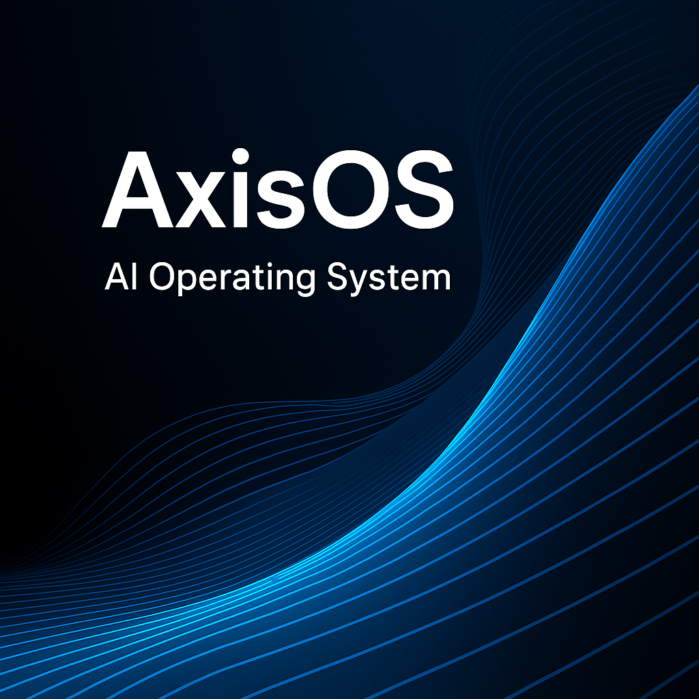
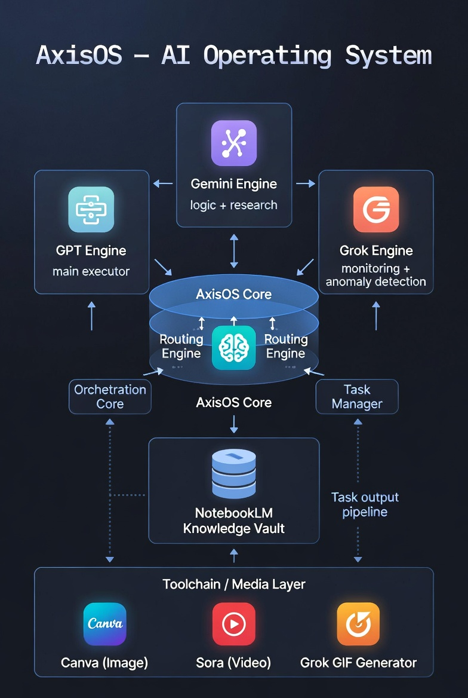

AxisOS – AI Operating System
GPT / Gemini / Grok を束ねて役割分担させる、マルチAI時代のための 「AIオーケストレーションOS」です。

AxisOSとは？
AxisOS は、GPT / Gemini / Grok など複数のAIをまとめて制御するための OS レイヤーです。
1つの質問に対して、
- 何を聞かれているのか整理する AI
- 実際に文章やコードを生成する AI
- 結果がおかしくないか監視する AI
といった形で、AIごとに得意な役割を分担させます。
人間は「どのAIを使うか」をその都度選ばずに、AxisOS に対して「やりたいこと」だけを投げる。 その先のモデル選択やタスク分割は、OS が自動で行う――それが AxisOS のコンセプトです。
3行で分かる AxisOS
- 複数のAIを、ひとつのOS上で役割分担させて協調動作させる。
- タスク内容に応じて、最適なAIと実行順序を自動で決める。
- 暴走・破綻・負荷集中を監視しながら、安定したアウトプットを返す。
AxisOS の全体アーキテクチャ
下図は、AxisOS 上で各AIエンジンとツールがどのように役割分担しているかを示したものです。 「思考」「実行」「監視」「知識」「メディア出力」がレイヤーとして分かれています。

GPT Engine – Execution Layer
実際の文章生成・コード生成・要約など、アウトプットを形にする「メイン実行役」です。
Gemini Engine – Logic / Research Layer
要件整理・分解・調査・比較検討など、論理構成を担当する「思考エンジン」です。
Grok Engine – Monitoring Layer
出力の異常・暴走・矛盾・制約違反を検知し、警告やリトライを行う「監査エンジン」です。
AxisOS Core – Orchestration / Routing / Task Management
どのタスクをどのAIに、どの順番で投げるかを決める中枢です。 タスク分解・ルーティング・リトライ・並列実行を管理します。
NotebookLM – Knowledge Vault（Read-only）
ドキュメント・マニュアル・仕様書を読み込んでおく、参照専用の知識ストレージです。 AxisOS からは「検索・読む」だけを行い、書き換えは行いません。
Toolchain / Media Layer（Canva / Sora / Grok GIF）
テキストから画像・動画・GIFなどを生成する表現レイヤーです。 AxisOS が生成したプロンプトを渡して、マルチモーダルな出力を実現します。
AxisOS が活きるユースケース
ユースケース1：AIアシスタントの安定化
日々の問い合わせに答えるAIアシスタントの裏側で、
- 質問の解釈・意図の整理：Gemini
- 回答文・コードの生成：GPT
- 出力の監視・リスク検知：Grok
といった役割分担を AxisOS が自動で行います。 長時間の対話でも、トーンや方針がブレにくくなります。
ユースケース2：コンテンツ生成ワークフローの自動化
1本のコンテンツを 「構成案 → 本文生成 → 校正 → 要約 → サムネ画像 → ショート動画」 まで自動生成するパイプラインを AxisOS 上に構築します。 各ステップをタスクとして定義し、それぞれに最適なAIを割り当てます。
ユースケース3：企業向けAI制御基盤
既存システムとAIサービスの間に AxisOS を挟むことで、 「どのベンダーのどのモデルを使うか」を後から差し替え可能にします。 ベンダーロックインを避けつつ、マルチAI時代に備えた基盤として利用できます。
ユースケース4：Sora / Canva / Grok GIF とのメディア連携
AxisOS がストーリーボードやプロンプトを組み立て、
- 動画生成：Sora
- 静止画：Canva
- ショートGIF：Grok
に振り分けることで、1つの企画から複数フォーマットのクリエイティブを自動展開できます。
AxisOS Core の内部構成
ここからは、開発者・プロダクト担当者向けの説明です。 AxisOS をどのようなレイヤー構造で設計しているかを簡潔にまとめます。
Orchestration Core
ユーザーからの要求（自然言語 / APIリクエスト）を受け取り、 どのようなタスクに分解するかを決める中枢ロジックです。
- ワークフロー定義（YAML / JSON）に基づくステップ管理
- 正常系／例外系／再試行ポリシーの管理
- タスク間の依存関係の解決
Routing Engine
各タスクに対して、どのAIエンジン（GPT / Gemini / Grok / そのほか）を使うかを決定します。
- モデル種別・コスト・レイテンシ・精度などのパラメータを考慮
- ルールベース＋将来的には統計的なルーティングにも対応可能な設計
- ベンダーごとのAPIエンドポイントを抽象化
Task Manager
タスクのキューイング・並列実行・タイムアウト・リトライを管理するコンポーネントです。
- 非同期実行基盤（例：Cloud Run + Pub/Sub）と連携
- 優先度キューによる重要タスクの先行処理
- 実行ログ・トレース情報の収集
Knowledge Vault (NotebookLM)
NotebookLM を利用した、読み取り専用のナレッジレイヤーです。
- ドキュメント・仕様書・議事録などを NotebookLM 側でインデックス化
- AxisOS からは「クエリ → 回答テキスト／引用元リンク」を取得
- 書き込み・編集は行わず、OS側のロジックからは常に「参照専用」として扱う
Output Pipeline
生成されたテキスト／構造化データを、 メディアツール群（Sora / Canva / Grok GIF / そのほか）に橋渡しするパイプラインです。
- 各ツールに最適化されたプロンプトフォーマットに自動変換
- 複数フォーマット（動画・画像・テキスト要約）を並列生成
- 出力物をメタ情報と紐づけてログ・再利用を可能にする
AxisOS プロジェクトと導入メリット
導入メリット
-
マルチAI環境を安定化させる軽量OS
既存アプリケーションやワークフローに挟むだけで、制御レイヤーを追加可能です。 -
アプリ／サービス双方に組み込みやすい設計
サーバサイド（GCP）中心に設計しつつ、将来的なクライアント連携も視野に入れた構成です。 -
Primus / AIEC / 未来のNEXSPACEプロダクトと共通基盤化
NEXSPACE 内の各サービスが同じ AxisOS 上で連携できるよう設計しています。
プロジェクトとクラウドファンディング
※このページは AxisOS の概要・技術コンセプトをまとめた紹介用LPです。 実際のご支援・お申し込みは、CAMPFIRE 上のプロジェクト公開後にそちらから行っていただきます。
AxisOS は現在、クラウドプラットフォーム上でのコア実装と検証フェーズにあります。 開発資金の一部は CAMPFIRE を通じて調達し、 コアモジュール・技術レポート・Developer Preview 環境の公開を進めていきます。
プロジェクトの背景や資金の使い道については、 CAMPFIRE のプロジェクトページでも詳しく説明しています。